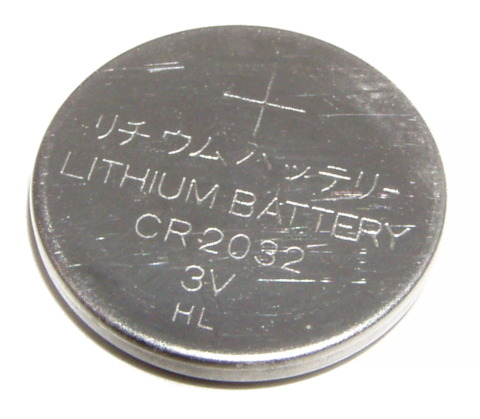
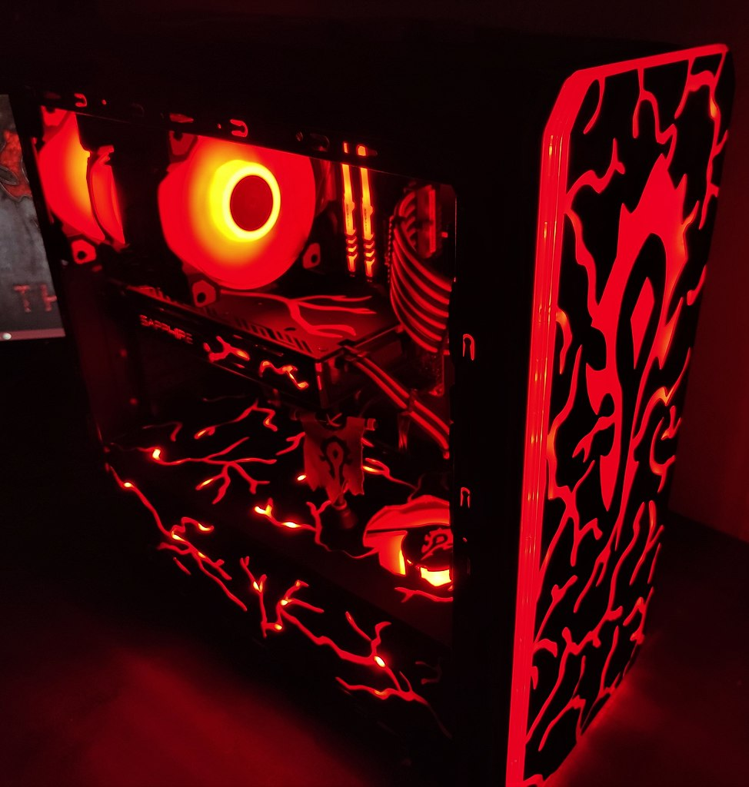

Elementos auxiliares¶
- Fuente de alimentación
La fuente de alimentación es el componente que se encarga de alimentar con energía eléctrica de baja tensión y en corriente continua (5V y 12V) a todos los componentes del ordenador.
La fuente de alimentación debe tener suficiente potencia (vatios) para poder alimentar todos los componentes, pero también debe tener suficiente corriente (amperios) para poder alimentar la tarjeta gráfica, que suele ser el componente con mayor demanda de corriente.
En los teléfonos móviles y tabletas la fuente de alimentación suele ser un adaptador para enchufe con salida USB-C. Muchos de estos adaptadores se diseñan para dar una potencia cada vez mayor, por lo que no es extraño encontrar adaptadores desde 18W hasta 80W o más, cuando anteriormente los cargadores USB apenas alcanzaban los 10W.
- Sistema de alimentación ininterrumpida (SAI)
Un sistema de alimentación ininterrumpida o SAI (en inglés UPS) es un dispositivo con una batería recargable en su interior, que puede proporcionar alimentación eléctrica a un ordenador u otros aparatos durante un apagón eléctrico.
El cambio de funcionamiento durante un apagón es tan rápido que el ordenador no llega a apagarse y puede seguir funcionando durante unos minutos hasta que se restablezca la alimentación eléctrica normal o hasta que se apague el ordenador de manera correcta.
- Refrigeración por aire
La refrigeración por aire se utiliza en los ordenadores más potentes (por ejemplo, un ordenador portátil o un PC), para extraer fuera de la caja el calor generado por sus circuitos. Normalmente se utilizan ventiladores encima de la CPU, en la tarjeta gráfica y en la fuente de alimentación, aunque puede haber más ventiladores para evacuar el calor de la caja.
Los ventiladores suelen ser los elementos más ruidosos de un ordenador, razón por la que en algunos ordenadores de menores prestaciones se utilizan sistemas de ventilación por convención (sin ventiladores) para evitar el ruido.
Otro sistema que permite retirar grandes cantidades de calor con poco ruido es la refrigeración líquida, aunque su precio es mayor que la refrigeración por aire.
- Refrigeración líquida
La refrigeración líquida es una técnica de enfriamiento que utiliza agua u otro líquido como medio refrigerante. Es mucho más eficaz que la refrigeración por aire y produce menos ruido, aunque tiene el inconveniente de ser mucho más costosa.

Interior de un ordenador personal con refrigeración líquida.¶
Llama roja, CC BY-SA 4.0, via Wikimedia Commons.- Caja
La caja del ordenador es la estructura metálica o plástica que sirve para albergar, sostener y proteger los diferentes componentes del ordenador.
Existen multitud de formatos de caja de varios tamaños y propósitos, desde una caja pequeña tipo barebone hasta una gran caja de tipo torre, cajas de tipo rack para servidores o carcasas de portátiles o tabletas.
- Pila botón
La pila de la placa base es una pila de tipo botón que se encarga de alimentar el reloj en tiempo real y la memoria RAM-CMOS que almacena las opciones de la BIOS mientras el ordenador está apagado. Suele ser una pila de botón modelo CR-2032.
Cuando esta pila se desgasta tras varios años de uso, el reloj deja de mantener la hora actual y se restablece a su hora de inicio, además se pierden los ajustes de la BIOS. Todo esto provoca que el ordenador no funcione con normalidad o que no funcione en absoluto.
La solución a este problema es sencilla porque se puede encontrar una pila de repuesto en cualquier comercio y el reemplazo es relativamente fácil de realizar.
Pila botón CR-2032, la más común en las placas base.¶
Krzysztof Woźnica, Public Domain, via Wikimedia Commons.- Reloj en tiempo real
El RTC o reloj en tiempo real es un pequeño circuito integrado que actúa como un reloj manteniendo la fecha y la hora actual aunque el ordenador se encuentre apagado. Normalmente va acompañado de una pequeña pila de tipo botón para darle alimentación. Su consumo es muy reducido, por lo que la pila puede durar varios años en funcionamiento.
El reloj de tiempo real se utiliza para asignar a los archivos creados la fecha y la hora actual o para sincronizarse con servicios por Internet
- Modding
El modding deriva de la palabra inglesa modify (modificar) y es el arte o técnica de modificar la estética de un ordenador personal añadiendo luces, imágenes, paredes transparentes, etc.
Modificación del chasis con aluminio, acrílico y ledes RGB.¶
Acuantico, CC BY-SA 4.0, via Wikimedia Commons.

{kind=link}
{kind=link}